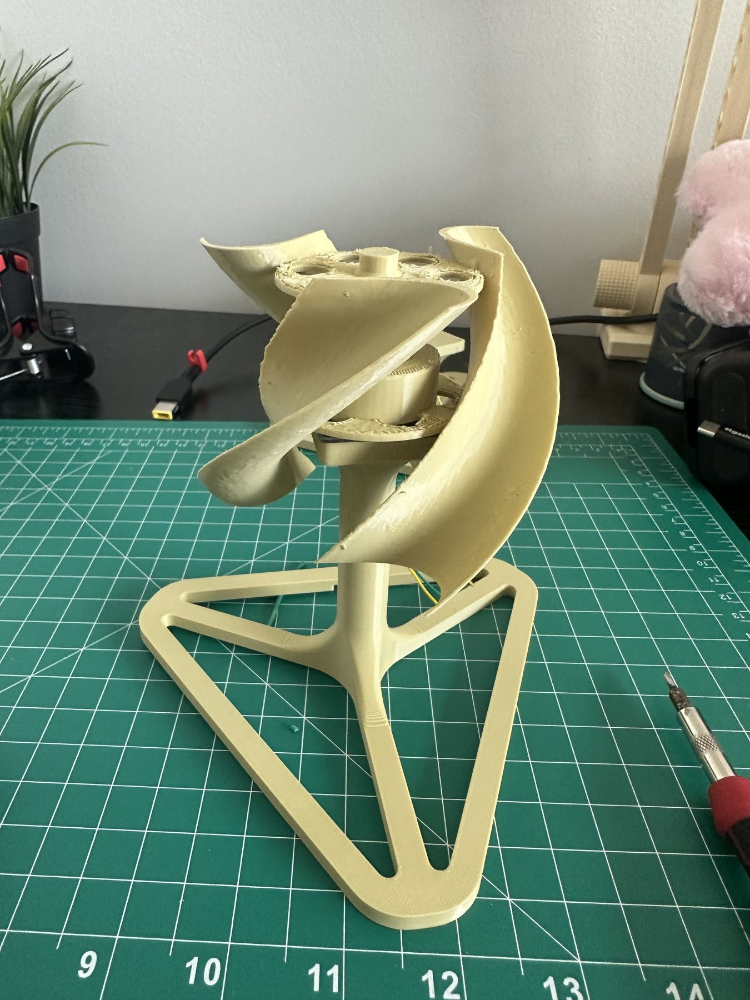

Eine gedruckte Vertikalachsen-Turbine, die anzeigt, wenn sie falsch dreht
Ein windgetriebener Generator mit einer AC-DC-Wandlungsstufe und einer analogen Anzeigeschaltung, die "zu langsam", "zu schnell" und eine Lampe ansteuert, deren Helligkeit der Drehzahl folgt. Das Labor stellte einen Generator und einen Standardpropeller; ich habe stattdessen eine helixförmige Vertikalachsen-Turbine und einen Dreibeinständer dafür entworfen und gedruckt.

Die Vorgabe
Der Generator ist eine permanenterregte Maschine, sein Ausgang ist also Wechselspannung, deren Höhe mit der Wellendrehzahl steigt. Die Aufgabe verlangte, diese in Gleichspannung zu wandeln und daraus ein Anzeigesystem mit drei Verhaltensweisen zu bauen: eine Leuchte für zu langsames Drehen, eine Leuchte für zu schnelles Drehen und eine Leuchte, deren Helligkeit mit der Drehzahl steigt. Alles musste aus diskreten Bauteilen aufgebaut und vorher in Multisim modelliert werden.
Die gleichgerichtete Spannung, V_motor, ist das Drehzahlsignal: schnellerer Rotor, höhere Gleichspannung. Ein Brückengleichrichter (vier 1N4002, übernommen aus einem früheren Laborversuch) und ein 10-uF-Kondensator machen aus der Wechselspannung dieses Signal. Zwei Kanäle eines LM339 vergleichen V_motor mit zwei Schwellen, die jeweils über ein 10-kOhm-Poti eingestellt werden: Rot leuchtet bei Unterdrehzahl, Gelb bei Überdrehzahl. Die grüne Anzeige umgeht die Komparatoren komplett und hängt über einen 330-Ohm-Widerstand direkt an V_motor, ihre Helligkeit folgt also einfach der Drehzahl. Kalibriert wurde am Ventilator: bei der langsamsten zulässigen Drehzahl POT1 trimmen, bis Rot gerade erlischt, bei der schnellsten POT2 trimmen, bis Gelb gerade angeht.
Der Rotor
Technische Details
| Generator | Gestellter permanenterregter Generator, montiert in der Nabe eines eigenen Rotors |
|---|---|
| Rotor | Zweiblättrige helixförmige Vertikalachsen-Turbine und Dreibeinständer, von mir entworfen und im FDM-Verfahren gedruckt |
| Wandlung | Brückengleichrichter, vier 1N4002-Dioden, mit 10-uF-Glättungskondensator; der DC-Ausgang V_motor ist das Drehzahlsignal |
| Anzeigen | LM339 Vierfach-Komparator, zwei Kanäle genutzt: rote Unterdrehzahl-LED gegen V_low, gelbe Überdrehzahl-LED gegen V_high, beide Schwellen über 10-kOhm-Potis eingestellt; grüne LED direkt aus V_motor über 330 Ohm, Helligkeit folgt der Drehzahl |
| Versorgung | Labornetzteil für den LM339 und die Schwellen-Potis; der Chip brauchte mindestens 7 V, um sich mit diesem Signalbereich korrekt zu verhalten |
| Modellierung | Multisim vor dem Aufbau |
Was ich verbessern würde
Zwei Dinge haben mich auf der Werkbank Zeit gekostet. Die grüne Anzeige sollte eigentlich über einen Transistor laufen, für einen größeren Helligkeitsbereich, und ich habe diese Stufe nie richtig eingestellt bekommen; die LED läuft deshalb direkt an V_motor und leuchtet erst ab etwa 2 V. Und die Anzeigeschaltung brauchte mindestens 7 V Versorgung; ich habe sie lange mit 5 V gespeist und Phantomfehler in der Schaltung rund um den LM339 gejagt, bevor ich nachgesehen habe, was der Chip eigentlich braucht. Erst die Versorgungsspannungen durchrechnen, dann debuggen.